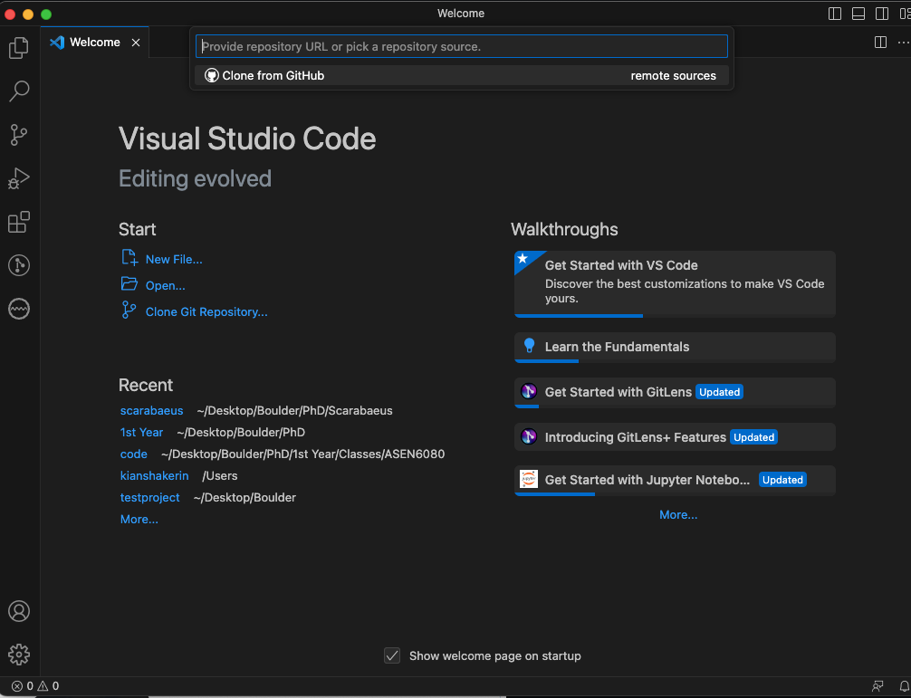

Install and Set Up Scarabaeus#
Last revised by M. Pugliatti on 2025 FEB 4
Prerequisites#
There are a few additional tools that must be intalled before installing Scarabaeus.
Python#
Python is a high-level, general-purpose programming language. Its design philosophy emphasizes code readability with the use of significant indentation.
Install the recomemended version of Python - 3.11.9
Git#
Git is a free and open source distributed version control system designed to handle everything from small to very large projects with speed and efficiency. Install Git if your machine does not already have it. Most Mac and Linux machines will have Git already installed.
Install Git - Git Download
Integrated Development Environment (IDE)#
Use any IDE or text editor you like. We encourage the use of an IDE that has add-ons to make development a bit easier. Most developers on the team use VSCode for its large ecosystem of powerful extensions. For SCB, we recommend using VSCode as your IDE, with the following extensions:
Clone Scarabaeus Repository#
Clone the Scarabaeus repository from GitHub to your local machine. The repository is public, so no account or access keys are needed to clone it. You may do this via a terminal or your IDE.
Cloning via VSC:
Open a new VSCode window and click on the Clone Git Repository… option under the Start menu (center left of the window). Your screen should look like the image below.
Paste
https://github.com/CCAR-ORCCA/scarabaeus.gitinto the bar at the top of the VSCode window. From there follow the prompts to clone the repository.


Cloning via Command Line:
In the terminal type:
git clone https://github.com/CCAR-ORCCA/scarabaeus.git
Refer to GitHub Cloning Guide for extra documentations on cloning via command line.
Add Scarabaeus Package to Python Path#
Steps to add the scarabaeus/src folder path to the Python path for both macOS and Windows.
Steps for macOS
Open Terminal.
Run the following command to edit your
.zshrcfile:sudo nano ~/.zshrc
Enter your PC’s password
In the
.zshrcfile, add the following line to set the Python path:export PYTHONPATH=$PYTHONPATH:/path/to/scarabaeus/src
Replace
/path/to/scarabaeus/srcwith the absolute path of the src folder (e.g.,/Users/yourusername/path/to/scarabaeus/src).
Press Ctrl + O and press Enter, then Ctrl + X to exit the editor and save the changes.
Apply the changes by running:
source ~/.zshrc
Close this terminal and connect to the LASP VPN.
Make sure to add the
db_config.jsonfile to the config folder (It contains the DB Credentials - DB Name, HostName, URI, Port Number).
Steps for Windows
Press
Win + Rto open the Run dialog.Type
sysdm.cpland press Enter to open the System Properties window.In the System Properties window, click on the “Advanced” tab.
Click on the “Environment Variables” button at the bottom.
In the Environment Variables window, under the “User variables” section, click on “New…” to create a new environment variable.
In the “Variable name” field, enter
PYTHONPATH.In the “Variable value” field, enter the absolute path of the src folder (e.g.,
C:\path\to\SCB\src).Click OK to save the new environment variable.
Close the remaining windows by clicking OK.
Creating a Virtual Environment#
To create a virtual environment (venv) you have two options:
From Terminal#
python -m venv .venv
.venv\Scripts\activate # On Windows
source .venv/bin/activate # On macOS/Linux
To deactivate:
deactivate
In VSC#
Go to the search bar on top and click it
Select Show and Run Commands >
Select Python: Create Environment…
Select Venv
Either Use Existing or Delete and Recreate
Select the python interpreter as Python 3.11.9
Select
requirements.txt
and the venv will be generated following the list of libraries specified in requirements.txt
Library Installation#
From Terminal#
Install required packages:
pip install -r requirements.txt
In VSC#
Libraries are already installed in the last step of the venv generation.
External#
Additionally, othe rdependencies (DWN, IAS15) needs to be installed manually from terminal
Install IAS15 integrator dependencies:
git submodule update --init
pip install pyasa/.
On Windows, manually copy the shared library:
cp <venv>/Lib/site-packages/bin/pyasalib.dll <venv>/Lib/site-packages/pyasa/
where <venv> is your virtual environment directory.